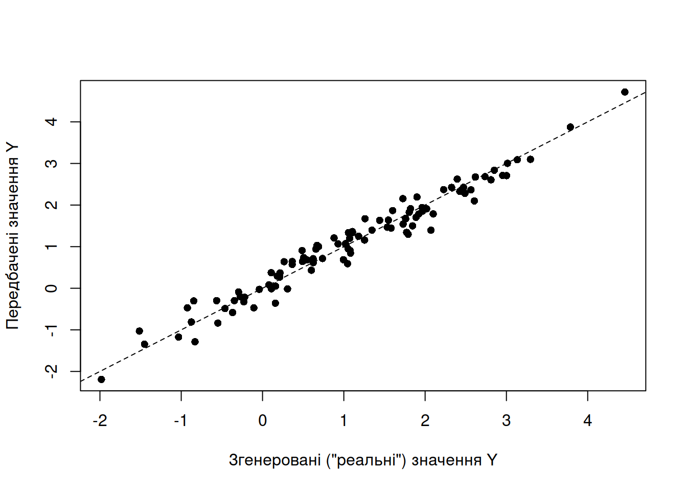
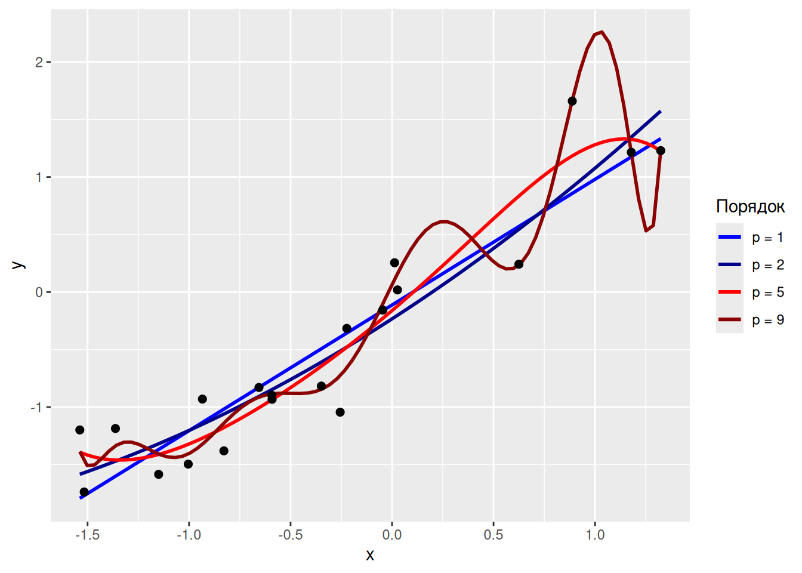
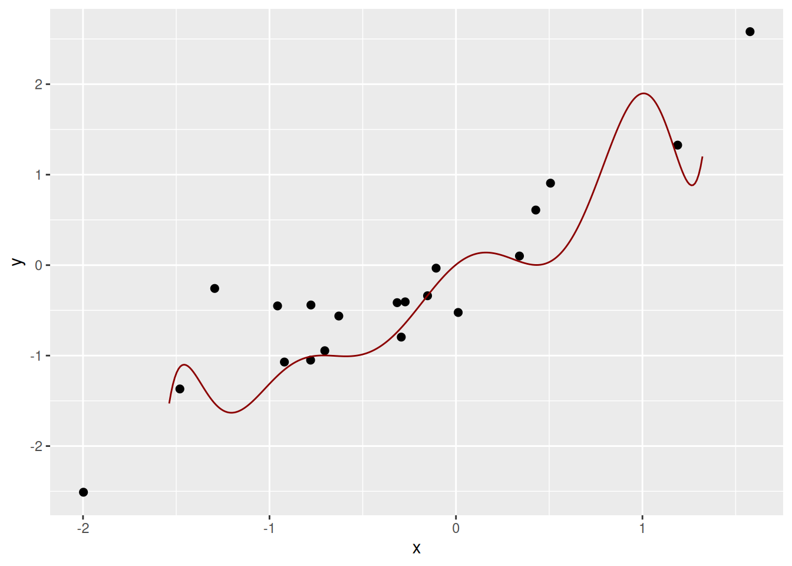

3.7 Передбачення, умовивід, та валідація
“Всі моделі є хибними.
Але деякі з них ще й корисні.”
— за Джорджем Боксом
Здавалось би, гаразд, якщо у дослідника є базове розуміння математичних тем, усвідомлення поняття ймовірності, достатньо ґрунтовні навички використання наукового методу для тестування гіпотез, яке-не-яке розуміння статистичного аналізу, то із цим усім можна проводити доволі непогані дослідження в екології. Загалом, мабуть, воно так і є, однак ще до початку проведення аналізу (а, як так, то і до проведення експерименту) необхідно розуміти кінцеву мету дослідження — чи ми очікуємо відповідь на конкретне фундаментальне питання, чи результати матимуть більше прикладну роль для подальших розробок. Хоча ці два звірі і є двома боками боками однієї монети, у них доволі специфічні й відмінні присмаки. Цей розділ буде завершальним у цій математичній секції, і являтиме собою настанову, фінальними міркуваннями, про котрі варто іноді задуматись в аналізі даних: (1) що саме ми хочемо досягнути цим аналізом, і (2) чи проведений аналіз є притомним.
3.7.1 Статистичний умовивід і обґрунтоване передбачення
Всякий статистичний аналіз можна звести до ситуації, коли існує набір предикторів \(X\), певна залежна змінна \(Y\), і аналіз зводиться до пошуку такої функції \(f\), що \(Y = f(X) + \epsilon\), де \(\epsilon\) позначає випадкову помилку, а функція \(f\) може бути регресією, класифікатором, чи якоюсь складною моделлю. Ми ніколи не дізнаємось справжній вигляд \(f\) (бо це може бути дуже складною функцією), але інструменти статистичного аналізу дозволяють знайти якусь апроксимацію до \(f\), скажімо, \(\hat{f}\), що дозволятиме побудувати модель вигляду \(\hat{Y} = \hat{f}(X)\). Навіщо ж оцінювати \(\hat{f}\)? Власне, оцінка \(\hat{f}\) дозволяє нам робити передбачення (prediction) або умовивід (inference) (James et al. 2021).
3.7.1.1 Передбачення
Передбачення корисне в ситуаціях, коли дані щодо змінних в \(X\) можна легко отримати у великих вибірках42, однак збір даних щодо \(Y\) вимагає інтенсивної польової роботи. Якщо є необхідність оцінити \(Y\) опосередковано через \(X\), тоді можна скористатися моделлю \(\hat{Y} = \hat{f}(X)\). В такому випадку, сама модель \(\hat{f}\) не є у фокусі нашої уваги – нехай це буде хоч якась модель, аби тільки \(\hat{Y}\) приблизно відповідало дійсності.
Звісно, всяка модель є лише спрощенням складної реальності, і оцінене \(\hat{Y}\) ніколи не дорівнюватиме невідомому та реальному \(Y\). Помилка передбачення (різниця між \(\hat{Y}\) та \(Y\)) складається із двох частин: по-перше, завжди існує незменшувана помилка (irreducible error), що походить із статистичного шуму в досліджуваній системі – та сама \(\epsilon\); по-друге, модель сама по собі може містити певні упередження щодо даних, що можна змінити модифікаціями моделі, й, відтак, ця помилка є зменшуваною (reducible error). Якщо уявити що вся варіація в даних походить від \(\epsilon\), то математичне очікування помилки передбачення дорівнює
\[\mathbb{E}[(Y - \hat{Y})^2] = \mathbb{E} [[f(X) + \epsilon - \hat{f}(X)]^2] = [f(X) - \hat{f}(X)]^2 + Var(\epsilon)\]
де \([f(X) - \hat{f}(X)]^2\) відповідає зменшуваній помилці – усередненому очікуванню помилки передбачення, а \(Var(\epsilon)\) – варіації незменшуваної помилки.
Варто зауважити, що оскільки проблема передбачення фокусується на \(\hat{Y}\), в той час як сама модель \(\hat{f}\) є, радше, інструментом43, то використання статистичного аналізу для передбачення іноді дозволяє послабити вимоги до припущень методів. Наприклад, однією із залізних вимог множинної лінійної регресії є відсутність колінеарності між предикторами – тобто предиктори не мають мати кореляцію між собою. Регресійна модель із колінеарними предикторами не є адекватною, адже весь математичний апарат регресії ґрунтується на припущенні, що предиктори є незалежними44. Іронія полягає в тому, що використання такої моделі є цілком прийнятним для передбачення якщо її передбачення є точними (знову ж, нам все одно як працює модель, аби тільки вона працювала), хоча її й не можна використовувати для умовиводу (див. приклад нижче).
3.7.1.2 Умовивід
Як вже можна було здогадатись, якщо для моделі \(\hat{Y} = \hat{f}(X)\) задача передбачення звертає найбільше уваги на результат моделі \(\hat{Y}\), то задача умовиводу більше дивиться на саму модель \(\hat{f}\). У фундаментальних дослідженнях дослідник часто питатиме щось на кшталт “а як впливає ця змінна на нашу систему?” або “чи ця змінна є важливою?” В таких ситуаціях до моделі не можна ставитись як до чорної скриньки, а навпаки, ми намагаємось розплутати взаємозв’язки в досліджуваній системі і з’ясувати що до чого шляхом тествання чітко сформульованих статистичних гіпотез. Очікувано, чим складніші математичні методи застосовуються в аналізі, тим складніше буває інтерпретація результатів. Відтак, для умовиводу краще застосовувати простіші методи (наприклад, лінійну регресію замість узагальнених додатніх моделей) – хоча всяку модель, яку можна використати для умовиводу, можна використати і для передбачення. Звісно, завжди варто мати на увазі що статистична значущість не тотожна біологічній значущості, отже, задача умовиводу в чистому вигляді не повинна всеціло покладатись на статистичний аналіз, а, радше, використовувати його для аргументації. Чистий умовивід тісно переплітається із філософією науки та базовими методами перевірки гіпотез. На практиці ж, наукове дослідження балансуватиме між умовиводом та передбаченням, тож варто просто мати на увазі ці два кути погляду на статистичний аналіз.
На завершення, різницю між передбаченням і умовиводом із лінійною регресією можна проілюструвати простим прикладом із генерованими даними.
Code
# створимо випадкову змінну із нормальним розподілом та 100 елементами
x1 <- rnorm(100)
# функція для генерації випадкової змінної із визначеною кореляцією
# до вхідної змінної
corvar <- function(x, rho) {
orth <- lm(runif(length(x)) ~ x)$residuals
rho*sd(orth)*x + orth*sd(x)*sqrt(1 - rho^2)
}
# створимо другу випадкову змінну
x2 <- corvar(x = x1, rho = 0.99)
# перевіримо чи кореляція між х1 і х2 становить 0.99
cor(x1, x2)## [1] 0.99Code
# згенеруємо залежну змінну як функцію х1 та х2 із рандомною помилкою
y <- 1 + 1*x1 + 1*x2 + rnorm(n = length(x1), mean = 0, sd = 0.25)
# побудуймо множинну регресію
fit <- lm(y ~ x1 + x2)
# погляньмо на коефіцієнти регресії
# ми очікуємо на 1 для інтерцепту, 1 для х1, та 1 для х2
fit %>% summary() %>% .$coefficients %>% round(digits = 3)## Estimate Std. Error t value Pr(>|t|)
## (Intercept) 1.014 0.027 38.124 0.000
## x1 1.230 0.196 6.287 0.000
## x2 0.126 0.699 0.180 0.858Code

3.7.2 Крос-валідація
Коли у дослідника є побудована модель (не важливо, чи для передбачення, чи для умовиводу), очевидним питанням є наскільки ця модель є адекватною. Звісно, конкретні методи мають певні метрики пристосованості (fitness) даних до моделі, як-то \(R^2\) і \(R_{adj}^2\) для лінійних моделей, що описує частку варіації в даних що пояснюється моделлю, не кажучи вже про інформаційні метрики. Цікавим підходом до валідації моделі, що є набагато більш гнучким відносно різноманіття методів є крос-валідація (cross-validation).
Із прикладу в попередньому розділі можна побачити, що за наявності вхідних даних, робочої статистичної моделі, та передбачень моделі можна порівняти вихідну залежну змінну \(Y\) та її апроксимацію, передбачену моделлю (\(\hat{Y}\)). Для кожного спостереження можна оцінити, наскільки далеко передбачення моделі від реальності: \((y_i - \hat{y_i})^2\), а відтак можна і додати відхилення в межах усієї моделі у певну статистику, що зветься середнім квадратом відхилень (mean sqared error, MSE):
\[\frac{1}{n} \sum_{i = 1}^n ( y_i - \hat{y_i} )^2\]
Звісно, для одного набору даних і однієї моделі можна розрахувати MSE тільки раз, та й це не надто має сенс, адже якщо в даних вже є відома залежна змінна, то навіщо її передбачати? Однак, пригадаймо пермутаційні методи – якщо є лише одна вибірка, то із неї все одно можна згенерувати багато значень статистики. Подібний принцип працює і із крос-валідацією: чому б не розділити вхідний набір даних на два випадкові набори? Тоді можна побудувати модель на одному наборі (тренувальні дані), спробувати передбачити залежну змінну в іншому наборі (валідаційні дані), і розрахувати MSE для передбачених значень у валідаційному наборі. Оскільки поділ вхідних даних на тренувальний та валідаційний набори є довільним, цю процедуру можна повторювати багаторазово із випадковим розподілом спостережень між наборами.
Існує чимало алгоритмів крос-валідації, із яких популярними є два:
крос-валідація із виключенням по одному (leave-one-out cross-validation, LOOCV):
для кожного спостереження \(i\) у наборі даних із \(n\) спостережень, побудуймо окрему модель (\(\hat{f_i}\)) на тренувальних даних, із яких видалено \(i\)-те спостереження (розмір тренувального набору становитиме \(n-1\));
використаймо модель \(\hat{f_i}\) на валідаційному спостереженні \(x_i\) для передбачення значення залежної змінної \(\hat{y_i}\), розрахуймо квадрат відхилення \((y_i - \hat{y_i})^2\);
повторимо для всіх \(i = 1, 2, \cdots, n\), і розрахуймо MSE як \(\frac{1}{n} \sum_{i = 1}^n ( y_i - \hat{y_i} )^2\).
k-кратна крос-валідація (k-fold cross-validation, k-fold CV):
розділимо вхідний набір даних на \(k\) випадкових набори приблизно однакового розміру (\(\approx n/k\)): \(T_1, T_2, \cdots, T_k\);
для кожного \(i = 1, 2, \cdots, k\), використаймо всі набори окрім \(i\)-того в якості тренувальних даних для моделі \(\hat{f_i}\);
використаймо модель \(\hat{f_i}\) на валідаційному наборі \(T_i\) для передбачення значень залежної змінної \(\hat{Y_i}\), розрахуймо MSE;
повторення процедури для всіх \(T_1, T_2, \cdots, T_k\) генерує \(k\) оцінок MSE, які можна усереднити як \(\frac{1}{k}\sum_{i=1}^k \text{MSE}_i\).
Можна легко уявити, що LOOCV є окремим випадком k-fold CV, в якому \(k=n\).
Процедура крос-валідації корисна для моделей із гнучкими параметрами, котрі обираються довільно, і оптимальне значення параметру залежить від даних. Наприклад, в алгоритмі k-найближчих сусідів (KNN) можна використати будь-яке значення \(k\), однак яке із них найкраще? Для крос-валідації в R існують спеціальні бібліотеки (наприклад, caret::train()), однак, залежно від ситуації (наприклад, використання незвичної родини моделей), іноді простіше буває писати алгоритм самостійно.
3.7.3 Компроміс між упередженням та варіацією
На завершення, із параметризацією моделей завжди варто бути обережними, бо із цим дуже легко перестаратись. Наприклад, із використанням поліномільної регресії буває нескладно побудувати таку криву, яка майже точно проходить через всі точки. Наприклад, згенеруймо хмару випадкових точок і побудуймо поліноміальні моделі різної складності:
Code
set.seed(11)
x <- rnorm(20)
y <- x + rnorm(length(x), 0, 0.5)
tibble(x = x, y = y) %>%
ggplot() +
geom_smooth(method = "lm", formula = "y ~ poly(x, 1)", se = F,
aes(x = x, y = y, color = "p = 1"), show.legend = T) +
geom_smooth(method = "lm", formula = "y ~ poly(x, 2)", se = F,
aes(x = x, y = y, color = "p = 2"), show.legend = T) +
geom_smooth(method = "lm", formula = "y ~ poly(x, 5)", se = F,
aes(x = x, y = y, color = "p = 5"), show.legend = T) +
geom_smooth(method = "lm", formula = "y ~ poly(x, 10)", se = F,
aes(x = x, y = y, color = "p = 9"), show.legend = T) +
scale_color_manual(name = "Порядок",
values = c("p = 1" = "blue", "p = 2" = "darkblue",
"p = 5" = "red", "p = 9" = "darkred")) +
geom_point(aes(x = x, y = y), size = 2)
Очевидно, що поліноміальна регресія 9-го порядку набагато краще описує дані, аніж першого. З іншого боку, модель всього лише описує позитивний зв’язок змінних \(x\) та \(y\), і дані мали би описуватись як \(y = 1 + 1 x + \epsilon\), а не як cкладний поліном на кшталт
\[y = -0.5 + 4x + 0.6x^2 - 0.6x^3 -0.2x^4 -0.1x^5 - 0.2x^6 - 0.1x^7 + 0.2x^8 + 0.8x^9 + \epsilon\]
Ці коефіцієнти можна знайти у відповідній моделі:
## (Intercept) poly(x, 9)1 poly(x, 9)2 poly(x, 9)3 poly(x, 9)4 poly(x, 9)5
## -0.5 4.0 0.6 -0.6 -0.2 -0.1
## poly(x, 9)6 poly(x, 9)7 poly(x, 9)8 poly(x, 9)9
## -0.2 -0.1 0.2 0.8Тож наскільки вдалою є складна поліноміальна модель для опису цих даних? Для власне цього набору даних – дуже вдалою, але проблема в тому, що складна модель підходить тільки для цих даних, і якщо ми згенеруємо інший випадковий набір даних, то попередня модель раптом стане дуже невдалою:
Code
set.seed(12)
x <- rnorm(20)
y <- x + rnorm(length(x), 0, 0.5)
y9 <- predict(fit9, data.frame(x = seq(-1.538, 1.323, 0.01)), type = "response")
ggplot() +
geom_point(aes(x, y), size = 2,
data = tibble(x, y)) +
geom_line(aes(x, y),
data = tibble(x = seq(-1.538, 1.323, 0.01),
y = y9),
color = "darkred")
Конструювання моделі, що є занадто складною для вхідних даних і, відтак, майже ідеально підбудовується до неї, є практикою що часто називають пере-пристосуванням, або перенавчанням (overfitting). Пере-пристосовані моделі, завдяки своїй складності, разом із реальним взаємозв’язком між змінними описують випадковий шум (який є незменшуваною помилкою), і відтак не можуть бути використані для адекватного умомиводу та передбачення.
Отже, якщо взяти інший набір даних із тієї ж дослідної системи, то складна пере-пристосована модель, побудована на тих же даних, матиме зовсім інший вигляд (наприклад, коефіцієнти поліноміального рівняння значно зміняться). Властивість моделі змінюватися значною мірою залежно від даних, використаних для її побудування, називають варіацією (variance). Модель із високою варіацією буде значно змінюватись за незначних змін у вхідному наборі даних, і високопластичні методи (на кшталт тих же поліномальних моделей високого порядку) мають, зазвичай, високу варіацію. Ідеально, ми намагаємось зменшити варіацію методу, аби побудована модель не сильно залежала від випадкового шуму в даних і не була ідіосинкратичною до конкретного використаного набору даних.
З іншого боку, упередження (bias) методу відповідає тій похибці, яку ми вводимо коли намагаємось описати складні взаємозв’язки реального життя простими моделями. Наприклад, проста лінійна регресія є доволі потужним і легко інтерпретованим методом, однак в екологічних системах рідко коли можна спостерігати чіткий лінійний зв’язок. Всякий алгоритм в аналізі даних може містити системну помилку і невірно інтерпретувати дані, і подальше використання цього алгоритму вводитиме упередження. Значне упередження моделі викликатиме недо-пристосування, коли нестача гнучкості моделі змушує модель ігнорувати релевантну інформацію (Рис. 3.15).
![Використання простого методу для опису складної нелінійної залежності, в принципі, є можливим, однак призводитиме до хибного умовиводу та передбачення. В цьому випадку існує куполоподібна залежність між змінними, однак проста лінійна регресія не вказує на будь-який статистично значущий взаємозв'язок. Приклад описує зв'язок між кількістю відкладених яєць самками американського кліща собачого (*Dermacentor variabilis*) та температурою середовища в період перед відкладанням яєць ([Mount & Haile 1989](https://doi.org/10.1093/jmedent/26.1.60)).](bookdown-demo_files/figure-html/fig-high-bias-1.png)
Рис. 3.15: Використання простого методу для опису складної нелінійної залежності, в принципі, є можливим, однак призводитиме до хибного умовиводу та передбачення. В цьому випадку існує куполоподібна залежність між змінними, однак проста лінійна регресія не вказує на будь-який статистично значущий взаємозв’язок. Приклад описує зв’язок між кількістю відкладених яєць самками американського кліща собачого (Dermacentor variabilis) та температурою середовища в період перед відкладанням яєць (Mount & Haile 1989).
Найкращим методом для статистичного умовиводу та передбачення є такий метод, який має найменше упередження і найменшу варіацію. Однак, на практиці ці дві властивості пов’язані між собою: пластичні методи мають високу варіацію та низьке упередження. Балансування варіації та упередження в аналізі даних часто називають компромісом упередження та варіації (bias-variance trade-off), і пошук найкращої моделі зводиться до обережного налаштування параметрів складності моделі, точності її передбачень, та можливості генералізації моделі і її використання на даних, що не були використані на етапі тренування моделі.
Наприклад, дистанційне зондування поверхні планети – мультиспектральні супутникові знімки із програм Sentinel та Landsat є у вільному доступі й оновлюються кожні 10–16 днів.↩︎
Іншими словами, нам в принципі все одно яку модель використовувати, нехай це буде хоч чорна скринька, аби тільки на виході із моделі виходило хороше передбачення.↩︎
… а також гомоскедастичними і нормально розподіленими – дуже раджу читати про припущення методів перед їх використанням!↩︎